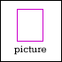

creative stuff //
|
|  | Turning Blue All Over The Windows And The Floors
by // Kate Williams
I love it all the labored breathing obstructed by eager, moist-mouthed kisses...
...check it out |
|

| | who do you love?
by // likim chuah
cross processed photo of arm and pillow with "high school writing"....check it out |
more stuff |
|
creative people //
|
| | Matt Clayfield
An owl. A horse. A basin. What do these have in common? ...read more |
more people |
|
| | highlights and links //
True Tales in PRINT
We've collected together a selection of works from the True Tales e-zine into a special edition print zine of the same name! If you'd like a copy just ping your name and postal address to admin@noise.net.au and we'll make sure you get a copy. |
Even more noise
Into comics? Take a look at the great stuff in the noise Comics section. Radio more your thing? Our ABC Radio page will let you know when to tune. Music? Check out our Remix finalists.. |
Dazed and Confused?
Can't figure out what is going on here at noise.net.au? Well, then, for those who want an overview of the festival, go to About. To find out what's on, take a look at our Festival Guide. For the more detailed lowdown, take a look at some FAQs. |
|
|
|